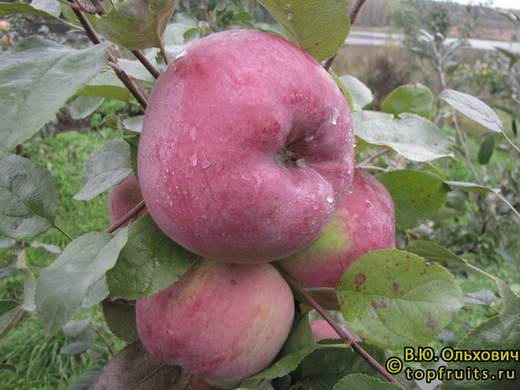
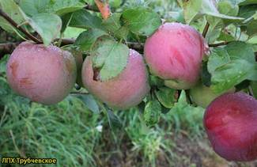
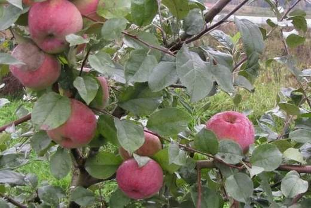
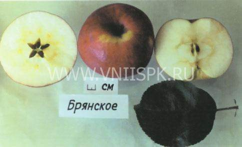

Один из лучших позднеосенних сортов средней полосы: крупные нарядные яблоки десертного вкуса, хранящиеся до зимы.




Клик по фото — полный размер. Фотографии иллюстрируют сорт/вид; собраны из открытых источников (питомники, сортовые каталоги, Википедия).
Брянское — сорт А.И. Астахова, выведенный на Кокинском опорном пункте ВСТИСП. Плоды выше средней величины и крупные (в среднем около 150 г, отдельные до 300–350 г), жёлтые с румянцем. Мякоть плотная, сочная, отличного кисло-сладкого вкуса — дегустационная оценка до 4,8 балла, что для осеннего сорта выдающийся результат.
Дерево среднерослое с округлой кроной, скороплодное: первые яблоки даёт уже на 3–4-й год после посадки, плодоносит обильно и ежегодно. Зимостойкость высокая, устойчивость к парше хорошая.
| Зимостойкость | высокая (районирован для средней полосы) |
| Устойчивость к парше | хорошая |
| Самоплодность | частичная — с опылителями урожай заметно выше |
| Лёжкость | 2,5–3,5 месяца в прохладе |
| Назначение | десертное, универсальное |
Советы собраны из отзывов садоводов на форумах и из практики питомников; цитаты приведены по источникам ниже.